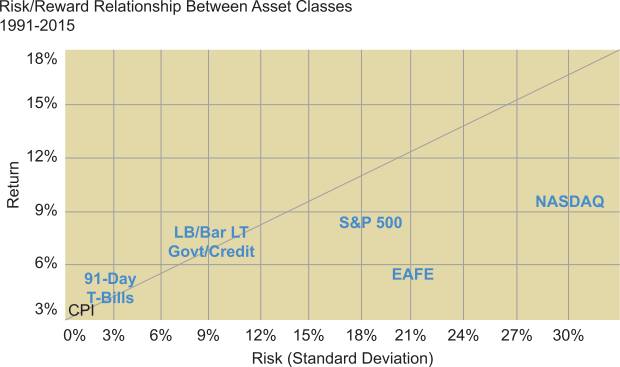

Having looked at the fundamentals, we shall now examine how investment advisors can help clients pursue their investment goals while minimizing portfolio volatility.
This is obviously accomplished by diversifying portfolios across each of the asset classes, which requires some understanding of the historical return and risk associated with each asset class. This understanding is largely acquired by studying commonly used indices.
The advisor needs a process by which to identify the optimal allocation. There are really two approaches to this. One involves generating the highest return for any level of risk, while another involves maximizing return for a given level of acceptable risk.
To determine either one requires the use of statistical analysis and applications that have grown out of the Capital Asset Pricing Model (CAPM), which is discussed on the next page.
Click each investment or index for more information.
